Lehigh Valley, Pennsylvania
Since 1785. Reimagined.
Bixler's × Rolex at the birthplace of American jewelry
Our heritage
In Joyce's Words
to come
“In 1785, my great-great-great-great-grandfather, Christian Bixler III, a Swiss clockmaker, metalsmith and veteran of the Revolutionary War, opened what would become America's oldest jeweler. Though he practiced a technical craft, Christian was an artist at heart, adding colorful flourishes to his designs in the spirit of Leonardo da Vinci. He was revolutionary in bringing the intricacy and engineering precision of fine timepieces to fine jewelry. He was also a driving force behind the creation of what would become the Lehigh Valley, a community leader and benefactor who believed in a bright future for Pennsylvania and for the young United States. Seven generations later, I still work in the store he founded, and I know our family's legacy is in good hands. What Christian believed in is what Perry believes in, and it goes beyond meticulous craftsmanship. Our founder loved his community and his customers, and Perry understands what each piece means to the people who live and work in the Lehigh Valley.”
Joyce Welkin · Seventh generation of the Bixler family
Crafting legacy, shaping the future
Perry Sporn
CEO, Bixler's · Founder, Perrywinkle's
“Since 1785, we've celebrated human hands making beautiful objects. This is our heritage, and this is our future.”
“For 241 years, Bixler's has earned its place by staying humble, knowledgeable and devoted to the client. Our jewelry, designed by a team I lead, is made by hand in our RJC-certified Montreal atelier in the manner of the great European houses, and engineered to last for generations. We carry only two watch brands, Rolex and Tudor, because we hold them to the same standard as our jewelry: we sell only what we most believe in. Our sister house, Perrywinkle's, has proven that belief as an Official Rolex Jeweler. Our work has appeared on the world's grandest stages, from our UFC partnership to the Oscars red carpet, where Dune production designer Patrice Vermette wore our pieces. And because we remain 100% independent, we are free to create what our clients have always dreamed of.”
Our purpose is simple: to elevate every client experience, from the first conversation to a lifetime of service.
Our atelier
Made by Hand
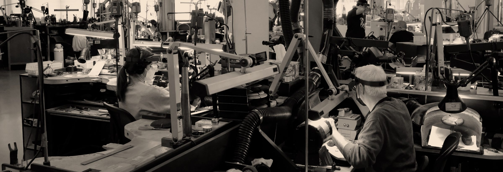
to come
50+
Artisans handcraft every piece in our Montreal atelier.
1,000+
Combined years of experience among our jewelers, setters and engineers.
3
Patents on unique diamond cuts, found only in our pieces.
Cartier-trained
Diamond setting, with rare diamond crystal polished under the microscope.
99%
Renewable energy powers our RJC-certified atelier.
100%
Repurposed precious metals, with ethically sourced diamonds and gemstones.
One family of houses
A Proven Rolex Formula
Bixler's and Perrywinkle's
The maker
Bixler's
Lehigh Valley, Pennsylvania
America's oldest jeweler, est. 1785. Bixler's designs and handcrafts all of the jewelry sold in both houses, in its RJC-certified Montreal atelier.
The sister house
Perrywinkle's Fine Jewelry
Vermont
Bixler's sister house, both owned by Perry Sporn, and a Rolex authorized retailer for nearly 20 years.
What it means for Rolex
Ready from Day One
Perrywinkle's team will train and manage the five-star Bixler's staff in all aspects of the world of Rolex, bringing proven Rolex expertise to the Lehigh Valley flagship.
Best of Lehigh Valley 2026 · Bixler's was named the 2026 Best of Lehigh Valley Jeweler.
Our people
Our Leadership Team
Hundreds of combined years in luxury jewelry and watches
Alice Raffin
Marketing Director
“Perry spoke with the right words, with the right values, with a very strong philosophy and kindness.”
Joined in 2023 after a meeting with Perry in Geneva. More than 20 years in luxury watches, including Tiffany & Co. and 12 years with Patek Philippe.
Lisa Murraco
Store Operations Director
Nathan Perkins
Rolex Liaison
Peter Clark
Rolex Service Director
36 years of service
Winklette Whittemore
32 years of service
Laura Guth
Portraits, titles and quotes to come
Cultural presence and partnerships
Quiet Brand by Nature. Powerful by Presence.
UFC · Since 2018
The championship belt.
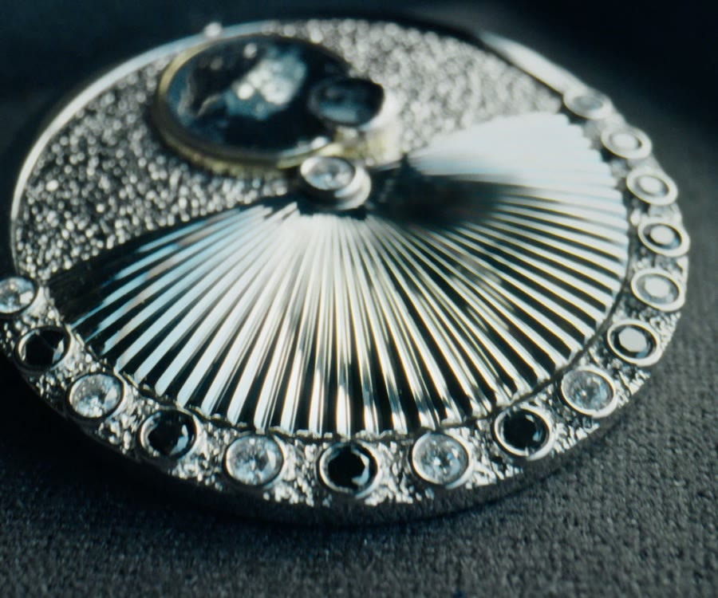
Oscars 2025
The Epic Sands custom brooch, for Dune: Part Two.
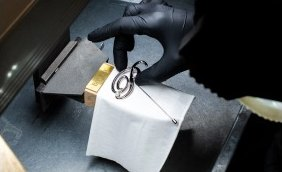
Oscars 2026
For The Girl Who Cried Pearls.
Rolex and Bixler's: a partnership
From Atelier to Boutique
Our savoir-faire will be present throughout the new flagship, working alongside expert watchmakers and guided by our standards of excellence.
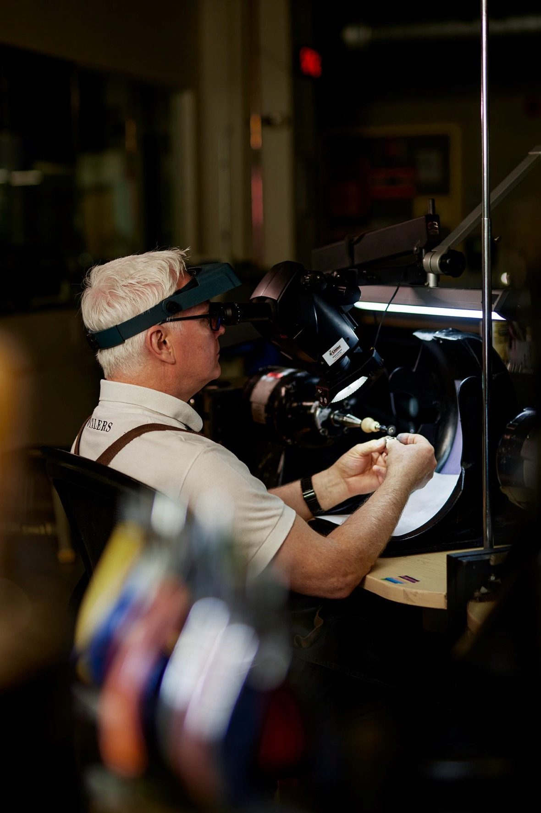
Our dedication to excellence
A Proven Rolex Partner
Perrywinkle's annual 2025 Rolex account review
Sell-out by month
The score, by part: Commercial 52.0% · Communication 21.3% · Service 20.0% · Finance 6.7%
88%
Score, end of 2025
85%
Score, end of 2024
420
Sell-out, 2025
427
Sell-out, last 12 months
+16%
Sell-out, year on year
1
Door
Crafting legacy, shaping the future
The Bixler Foundation
By 2028, Bixler's and Perrywinkle's will become the Bixler Foundation. Domiciled in New Hampshire, whose foundation law closely mirrors Swiss law, the Foundation will keep the house independent and devote itself to one purpose: supporting human artistry and sustainability, so that human beings keep making beautiful objects for the next 241 years.
Foundation commences
February 1, 2028
Board of directors
- Perry SpornCEO, Bixler's · Founder, Perrywinkle's
- Sondra SpornDirector, Bixler's
- Joyce WelkinSeventh generation of the Bixler family
- Jean-Christophe BédosFormer CEO, Birks and Boucheron Invited
- Lt. Gen. Keith M. Huber, U.S. Army (Ret.)Retired as the longest-serving Green Beret Invited
- Toby PomeroyFounder, Mercury Free Mining Invited
- Luke ClementeFormer General Manager, General Electric
- Jeff ZimmerPresident, Reed's Jewelers
Rolex and Bixler's: a partnership
A New Landmark for the Lehigh Valley
A restored 1923 landmark at 30 North Fourth Street, downtown Easton

Rolex and Bixler's: a partnership
Historic Roots, with a Modern Vision
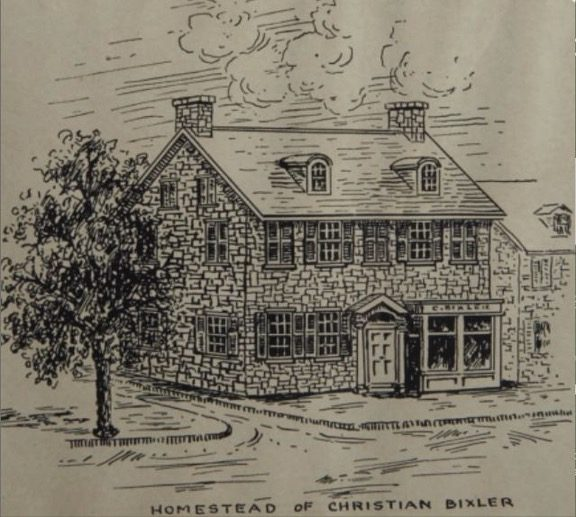
1785 · In the Lehigh Valley
Where It All Began
The original workshop: Christian Bixler III's fieldstone homestead and shop. Steep gables, rugged fieldstone walls, twin chimneys, shuttered windows and a hand-painted storefront form the DNA of everything that follows.
2027–2028
Building Tomorrow
A restored 1923 landmark at 30 North Fourth Street, in the heart of downtown Easton, a block from Centre Square. The historic Bixler's clock will move here from its current place in the square.
Rolex and Bixler's: a partnership
A Unique Space for Rolex
The new flagship marks an optimistic future while paying homage to the storied history of where the brand was founded.
Bixler's will stand proudly among the most valued partnerships in Rolex's portfolio of authorized retailers. America's oldest jeweler has put precision, integrity and service first for 241 years, with a new landmark building worthy of the crown.
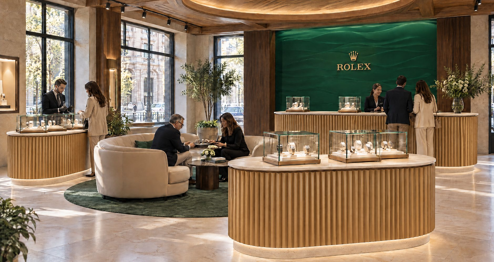
Rolex and Bixler's: a partnership
Two Floors
The Rolex Corner, the boutique and the Rolex service center at street level; the museum and the administration on the floor above.
Street level
- Rolex · The Rolex Corner, on the Church Street corner, from the main entrance
- Bixler's · The boutique and the entrance
- Rolex · The Rolex service center, behind glass
The floor above
- Bixler's · The museum, and by evening an event room
- Bixler's · The administration
Floor plans and areas to come.
A unique space for Rolex
The Rolex Corner
Street level
The Rolex Corner
Clients enter through Bixler's front door into the Rolex Corner, on the Church Street corner of the house.

Street level
The Rolex Service Center
A watchmaker at work behind glass, in full view of our clients.
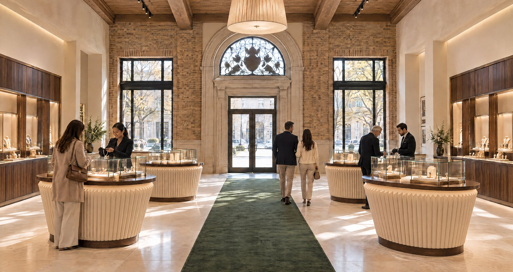
Bixler's interior
Inside the Store
Bixler's Boutique, through the front door.
Rolex and Bixler's: a partnership
A Museum Within
On the floor above
The museum is a curated archive of Bixler's 241 years of American craft, commerce and character.
Its centerpiece is the original deed to Christian Bixler III's workshop, signed by William Penn's nephew. Alongside are engineering drawings for many of the early clocks, journals recording late 1700s customers and their specific clocks, cutlery made by Christian Bixler III, Tiffany & Co. telegrams naming Bixler's one of the greatest jewelers, and eight restored working clocks from the 1700s.
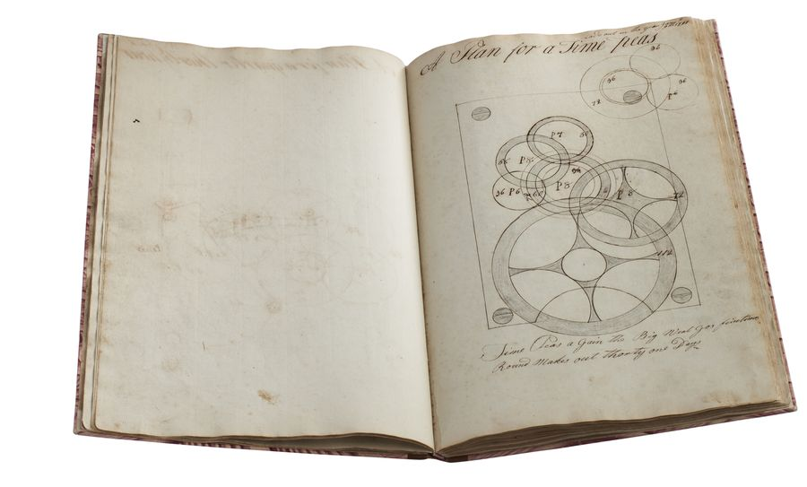
The early clocks
The clockmaker's book: a plan for a clock.
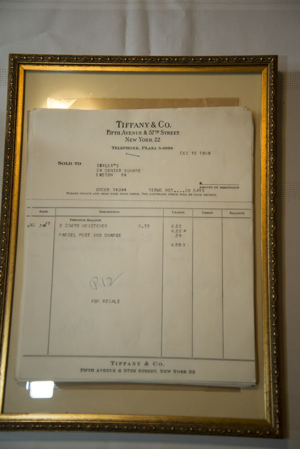
Tiffany & Co.
An invoice from Tiffany & Co. to Bixler's.
recording each clock sold
to come
The journals
Late 1700s customers and their clocks.
Bixler's interior
Bixler's Museum
A treasure trove of historical artifacts, on the floor above the boutique.
- Drawings of the first clocks
- 8 restored, working clocks from the 1700s
- Metalsmith examples by Christian Bixler III
- Customer journals from the 1700s and 1800s
- Telegrams from Tiffany & Co. to Bixler's
- Letters from famous people
- Legal, marketing and family records
By evening, an event room for private VIP events, its bar among the collection.

Bixler's interior
The House at Work
The administration: offices, a staff lounge and a kitchen, on the floor above.
Bixler's interior
Store Materials & Finishes
- Walnut and BrassWalnut panelling, with cornice, molding and baseboard in brushed brass with a warm honey finish.
- Fluted PedestalsUpholstered in green and beige ribbed fabric; walnut tops with integrated spotlights.
- Trestle TablesDisplay tables with glass tops and white velvet interiors.
- Calacatta FloorCream marble with grey and gold veining, in a mirror-polished finish.
- Schonbek Custom LightingCustom lighting designed by the Bixler's team with Schonbek artisans: warm, diffused and dense.
Wealth and growth
The Lehigh Valley: Where Success Chooses to Live
The Lehigh Valley has become the address of choice for a new generation of high earners: young professionals and families who have discovered they no longer have to choose between ambition and quality of life. Just 90 minutes from New York and an hour from Philadelphia, they find historic downtowns, award-winning restaurants and wineries, and the kind of luxury experiences once reserved for major cities, along with high-end car dealerships whose showrooms reflect the region's growing affluence.
The world-renowned Lehigh University draws exceptional talent and keeps it here, while homegrown icons like Martin Guitar, crafting instruments in Nazareth since 1839, and Crayola, headquartered in Easton, show the region's legacy of creativity and craftsmanship. Weekends bring the Pocono Mountains' resorts, golf and ski slopes within an easy drive, and game days mean the Eagles, Phillies, 76ers and Flyers just down the road in Philadelphia, or their minor league affiliates, the IronPigs and Phantoms, right at home.
At the heart of it all is downtown Easton, where the Delaware and Lehigh rivers meet and a historic city center has been reborn. Today, the Easton Public Market, the farmers' market in Centre Square, the restored State Theatre and Lafayette College sit within a short walk of chef-driven restaurants, boutiques, galleries and new downtown residences. For newcomers seeking walkable, vibrant city living, downtown Easton is where the Valley's new wealth comes to gather.
It is a place where wealth is being built, not just spent, and where discerning clients are looking for a jeweler worthy of the life they have chosen.
Wealth and growth
The Wealthiest Generation in the Lehigh Valley's History
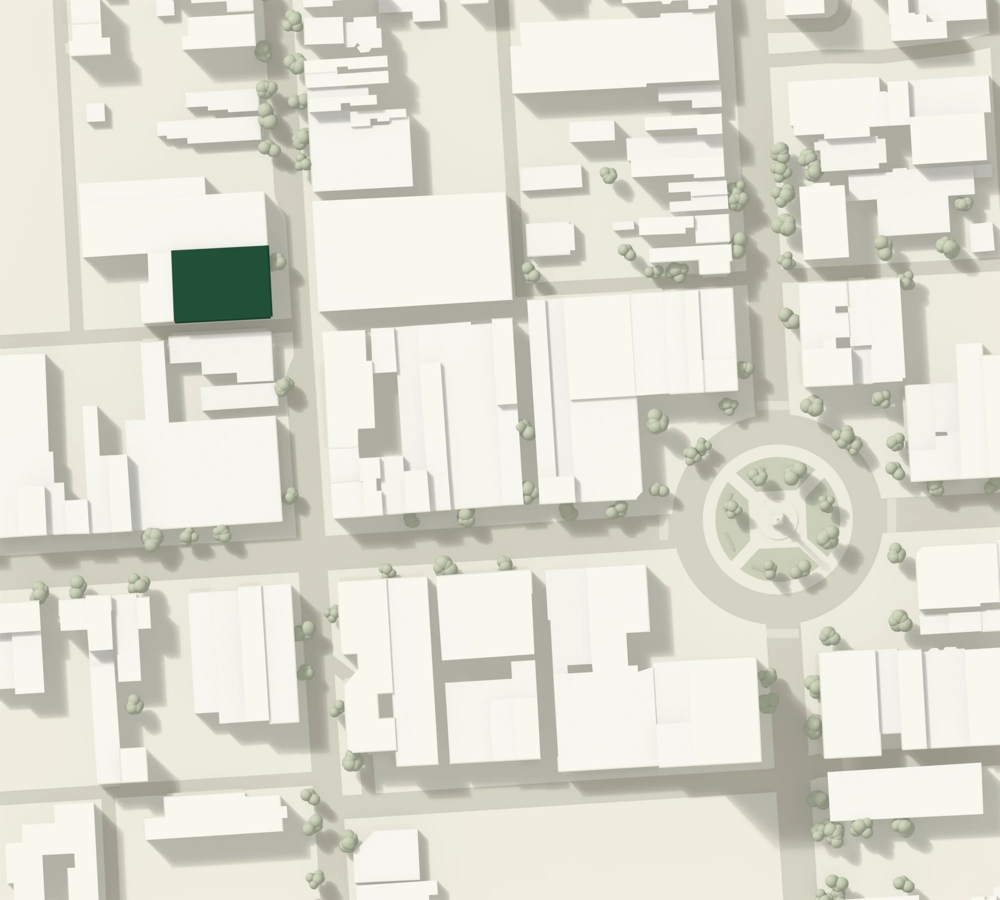
Top 8% for growth
The Lehigh Valley added 21,341 residents from 2020 to 2024, placing both counties in the top 8% of all U.S. counties for population growth.
International migration
17,000 people moved here from abroad since 2020. Lehigh County ranks in the top 5% of U.S. counties for net international migration.
Record income
Median household income has reached a record $84,260, up more than $17,000 in the last five years: above both Pennsylvania and the U.S.
Sources: Lehigh Valley Economic Development Corp. (LVEDC) analysis of U.S. Census Bureau data, 2020–2024.
Wealth and growth
A Region Expecting a More Prosperous Lifestyle
886,666
708,644 residents in the two-county Lehigh Valley; more than 886,666 across the metro.
9,000
More 18 to 34-year-olds since 2020, placing both counties in the top 10% of U.S. counties for young-adult growth.
11.7%
Growth in residents aged 20 to 24, from 2020 to 2024.
$57.3B
Record regional GDP, with total employment at an all-time high.
The Lehigh Valley is one of the fastest-growing regions in the Northeast, shaped by a new generation of young, educated professionals drawn by its universities, its position between Philadelphia and New York, and a quality of life larger metros can no longer offer.
Sources: LVEDC analysis of U.S. Census Bureau Population Estimates (2020–2024); U.S. Bureau of Economic Analysis.
Wealth and growth
An Economy Larger Than Two States
343,975
Jobs in the Lehigh Valley, an all-time high.
#68
The 68th largest economy in the U.S., exceeding Vermont and Wyoming.
#1
Mid-sized U.S. region for new economic development projects in 2025.
$14B
Projected related spending from Lilly, the largest investment in Lehigh Valley history, with 850 permanent jobs.
Sources: Lehigh Valley Economic Development Corp. (LVEDC), 2025 Annual Report; U.S. Bureau of Economic Analysis.
Wealth and growth
A Growing Affluent Market Without a Luxury Anchor
The Lehigh Valley's affluent household base grows 40% by 2031. The moment is now.
Affluent household projections
| Year | Households | $100K+ | Share | Median income | Regional GDP |
|---|---|---|---|---|---|
| 2024 | ~293,000 | ~102,500 | 35.0% | $84,260 | $57.3B |
| 2026 | ~305,000 | ~112,900 | 37.0% | $90,300 | $62B |
| 2027 | ~311,000 | ~118,200 | 38.0% | $93,500 | $65B |
| 2028 | ~317,000 | ~124,100 | 39.1% | $97,000 | $68B |
| 2029 | ~324,000 | ~130,400 | 40.2% | $100,500 | $71B |
| 2031 | ~337,000 | ~144,100 | 42.8% | $108,000 | $78B |
Income bands, 2024 to 2031
| Income | 2024 | 2031 | Growth | Market role |
|---|---|---|---|---|
| $100K to $149K | ~52,700 | ~63,200 | +19.9% | Core jewelry and watch buyer |
| $150K to $199K | ~23,400 | ~33,700 | +44.0% | Premium watch and bridal |
| $200K and above | ~26,400 | ~47,200 | +78.8% | High net worth: Rolex, estate jewelry |
| Total $100K+ | ~102,500 | ~144,100 | +40.6% |
Capturing this new market opportunity
From Digital First
to Physical Experience
Digital footprint
Anticipating Tomorrow's Clients
Through a strategic website redesign
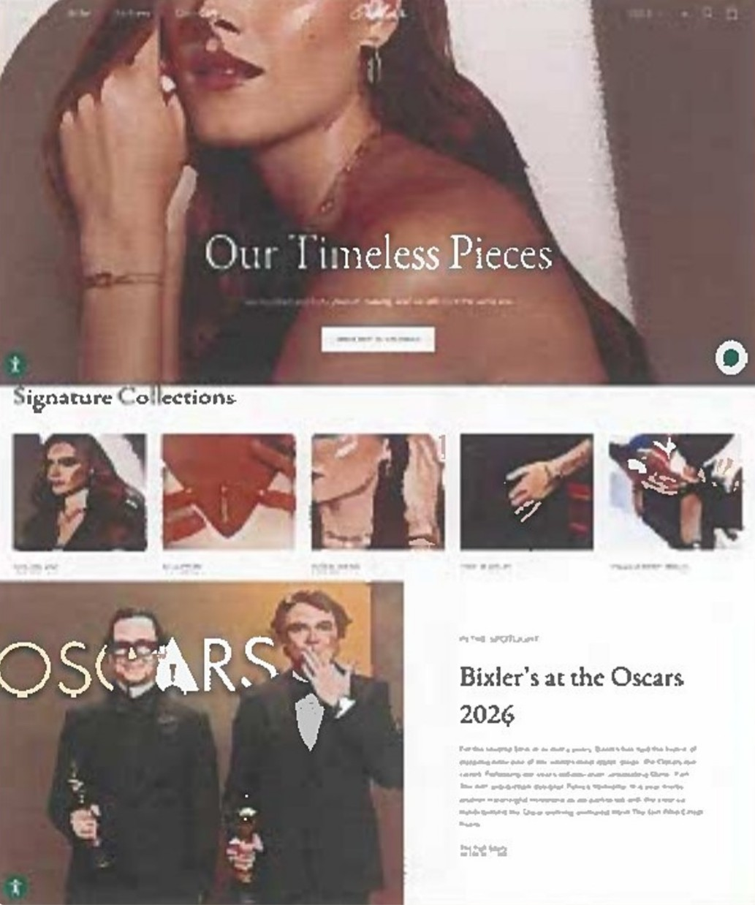
As part of our evolution, we're undertaking a complete redesign of our website built on Shopify, a flexible, high-performance foundation that efficiently adapts content to meet Rolex's exacting visual and editorial standards.
The redesign elevates the customer journey, creating a more seamless, intuitive experience from discovery to purchase.
Visually, we returned to our core identity, refining color, typography and art direction for a digital presence that feels both timeless and contemporary.
Digital footprint · Jan 1 – Sept 2026
Instagram Performance Overview
118
Total posts, year to date
869,254
Post impressions
+153.6% year on year
462
Shares
14.6K
Reactions and likes
+483.5% year on year
Key insight
Bixler's Instagram has evolved from a low-volume presence to a high-velocity luxury content channel. Total profile visits: 21.5K, an increase of 82.7% from last year.
Digital footprint
Audience Growth & Profile Reach
3.6K followers, up 169.2% from last year
Followers by age and gender
Top cities
| New York | 4.6% |
| Montreal | 4.3% |
| Toronto | 2.7% |
| Los Angeles | 1.7% |
| Allentown | 1.4% |
| Philadelphia | 1.3% |
USA 64.4% · Canada 13.9%
Women 57.4% · Men 42.6%
Our request to Rolex
We respectfully ask Rolex to invite Bixler's to become its authorized retailer in the Lehigh Valley.
The Building
A restored 1923 landmark in downtown Easton, with the Rolex Corner and the Rolex service center at street level, opening 2027–2028.
The House
America's oldest jeweler: a family maker with an RJC-certified atelier and 241 years of integrity.
The Readiness
Perrywinkle's proven Rolex team to train and manage the Bixler's Rolex staff from day one.
Thank You
Perry Sporn
perry.sporn@bixlers.com · +1 518 857 1895
Appendix
Bixler Foundation Board Biographies
Jean-Christophe Bédos
Former CEO, Birks and Boucheron · Invited
Began at Cartier in Paris in luxury watch product development and became managing director of Cartier France. He went on to lead Boucheron as CEO, then served 13 years as CEO of Birks, Canada's leading luxury jeweler. He has served as vice-chair of the Montreal General Hospital Foundation.
Lt. Gen. Keith M. Huber, U.S. Army (Ret.)
Invited
A West Point graduate who served 38 years on active duty, 14 as a general officer, retiring in 2013 as the longest-serving Green Beret. His commands included the 10th Mountain Division, First Army and U.S. Army South. At Middle Tennessee State University, he founded the Charlie and Hazel Daniels Veterans and Military Family Center.
Toby Pomeroy
Founder, Mercury Free Mining · Invited
An award-winning designer-goldsmith for more than 50 years, he introduced recycled gold and silver in 2006 and helped develop the Fairmined standard as a board member of the Alliance for Responsible Mining. In 2017 he founded Mercury Free Mining to eliminate mercury from artisanal and small-scale gold mining.
Luke Clemente
Former General Manager, General Electric
Spent 15 years in senior leadership at GE, including as General Manager of GE Digital Energy, with full P&L responsibility for two divisions. He led the integration of four acquisitions, two in mainland China, and is known for turning around underperforming businesses. B.S. in Accounting; MBA.